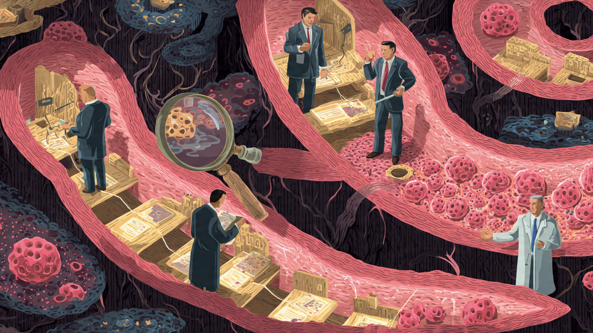

Vol. I · April 2026

Antitrust Law & Microbiology
The Sherman Antitrust Act declares that “every person who shall monopolize… any part of the trade or commerce among the several States” is guilty of a felony. The human gut microbiome comprises 38 trillion bacteria that control 95 percent of the body’s serotonin production, dominate 70 percent of the immune system, and actively exclude competitors. The Herfindahl-Hirschman Index has never been calculated for a gastrointestinal tract. We calculated it. The number was alarming.
By Marcus Theriault · April 22, 2026 · 14 min read
Telecommunications Law & Neuroscience
The Telecommunications Act of 1996 defines “telecommunications” as “the transmission, between or among points specified by the user, of information of the user’s choosing.” The human nervous system transmits electrochemical signals across 86 billion neurons at frequencies the FCC actively regulates. No license has ever been issued.
By Linnea Thorvald · April 20, 2026 · 14 min read
Pharmaceutical Regulation & Domestic Compliance
Under 21 U.S.C. § 321(g)(1), a “drug” is any article intended for use in the diagnosis, cure, mitigation, treatment, or prevention of disease. Peer-reviewed clinical research confirms that honey, turmeric, ginger, garlic, and chamomile produce measurable pharmacological effects. No American kitchen has ever held a manufacturing license.
By Beatrice Calderón · April 19, 2026 · 14 min read
Trade Law & Astrophysical Commerce
The Harmonized Tariff Schedule classifies energy as a dutiable import. The Sun delivers 1.5 quadrillion watt-hours of electromagnetic energy to U.S. territory daily from a point of origin 93 million miles outside national jurisdiction. No customs declaration has ever been filed.
By Marcus Theriault · April 17, 2026 · 14 min read
Maritime Law & Cardiovascular Regulation
The Supreme Court’s 1870 Daniel Ball test defines a navigable waterway as one “used, or susceptible of being used, as highways for commerce.” The human circulatory system moves 2,000 gallons of cargo daily across 60,000 miles of continuous channels. No Army Corps of Engineers permit has ever been issued.
By Linnea Thorvald · April 14, 2026 · 14 min read
Occupational Health & Biochemical Compliance
The Occupational Safety and Health Act of 1970 requires every employer to furnish a workplace “free from recognized hazards.” The human body contains formaldehyde, hydrochloric acid, hydrogen peroxide, and an ungrounded electrical system. No citation has ever been issued.
By Nathaniel Hargrove · April 13, 2026 · 14 min read
Aviation Regulation & Ornithological Compliance
Federal aviation law defines an “air carrier” as any entity that undertakes to transport persons or property by aircraft for compensation. Four billion birds cross North American airspace annually without a single operating certificate. The regulatory exposure is unprecedented.
By Nathaniel Hargrove · April 8, 2026 · 13 min read
Supply Chain Economics & Lagomorph Operations Research
The National Retail Federation forecasts $24.9 billion in Easter spending for 2026. Rabbit reproductive biology yields up to 144 offspring per breeding doe per year on a 30-day production cycle. The Fibonacci sequence was a workforce planning document.
By Eleanor Voss · April 5, 2026 · 14 min read
Environmental Law & Workplace Regulation
The Army Corps of Engineers uses a three-parameter test to identify jurisdictional wetlands under the Clean Water Act. An application of this test to commercial office buildings produces results the regulatory apparatus was not designed to contemplate.
By Eleanor Voss · April 2, 2026 · 13 min read
Aviation Law & Regulatory Compliance
14 CFR Part 107 defines a commercial drone operator as anyone who flies an unmanned aircraft for compensation or hire. NORAD officially confirms the sleigh is airborne. No FAA certificate has ever been issued to a North Pole address. The penalty exposure is $22.5 trillion.
By Daniel Haverford · March 31, 2026 · 11 min read
Labor Economics & Comparative Zoology
Bureau of Labor Statistics productivity data, combined with peer-reviewed research on feline hunting efficiency and sleep architecture, produces an uncomfortable comparison. Cats are 27 to 43 times more cost-effective per productive hour.
By Miriam Osei-Bonsu · March 31, 2026 · 13 min read
Sports Science & Public Health Policy
Marathon running injures the majority of training participants and produces cardiac events in approximately 1 per 100,000 finishers. Napping outperforms on every health metric the Olympic movement claims to value.
By Thomas Reinhardt · March 31, 2026 · 14 min read
Infrastructure & National Security
Federal law defines critical infrastructure as systems “so vital to the United States that the incapacity or destruction of such systems would have a debilitating impact on security, national economic security, or public health.” By the government's own data, squirrels qualify.
By Catherine Aldworth · March 30, 2026 · 12 min read
Monetary Policy
An actuarial analysis of leadership selection criteria, public approval optimization, and cognitive behavioral research suggests the optimal candidate may not be human.
By James Okonjo · March 30, 2026
Agricultural Policy
The legal definition of “farm” under federal agricultural census guidelines contains no requirement that the operation be located on Earth. Recent NASA experiments may have inadvertently triggered eligibility.
By Priya Sundaram · March 30, 2026